자료실 009
무료 클로드·제미나이로 모션그래픽 만들기
편집 프로그램 없이, 문장 한 줄로 로고 애니메이션·매출 그래프·쇼츠 인트로·가게 TV 메뉴판을 만들어요. 영상에서 쓴 문장 8개 전부, 고칠 때 쓰는 말, mp4 영상 파일로 저장하는 법까지 한 장에 모았어요.
1 · 가게 로고 6초 — 클로드
무료 · 약 40초 · 결과는 오른쪽 「아티팩트」 창에서 바로 재생
순서
- claude.ai 로그인 → 새 채팅
- 아래 문장 붙여 넣기(가게 이름·문구만 바꾸기) → 보내기
- 오른쪽 창에서 재생 확인 · 화면을 클릭하면 처음부터 다시
카페 '달빛로스터리' 로고가 나타나는 6초짜리 모션그래픽을 HTML 파일 하나로 만들어줘. 어두운 배경에서 원이 그려지고, 가게 이름이 한 글자씩 떠오르고, 마지막에 '오늘도 한 잔'이 아래에서 올라오게.
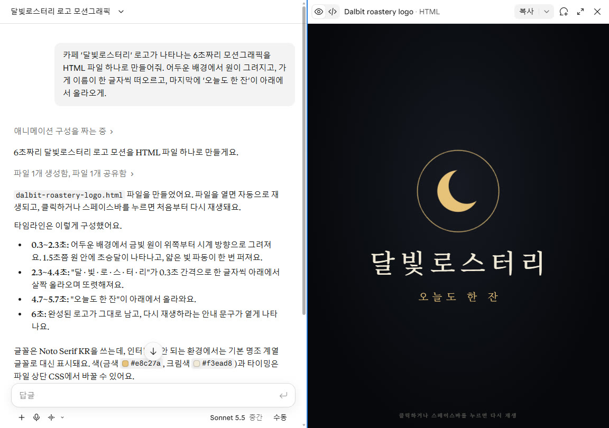
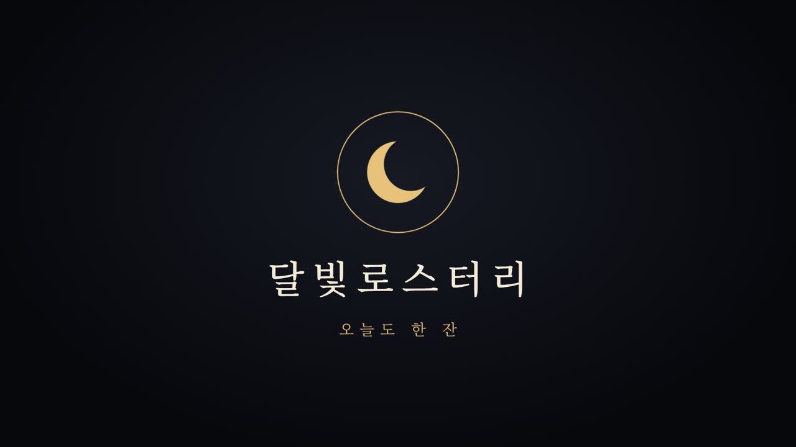
2 · 같은 문장, 제미나이는?
무료 · 약 32초 · 결과는 「캔버스」 창에서 미리보기
순서
- gemini.google.com → 새 채팅 → 1번 문장 그대로 붙여 넣기
- 미리보기가 안 뜨고 코드만 나오면: 입력창 왼쪽 + → 도구 더보기 → Canvas 켜고 다시 보내기
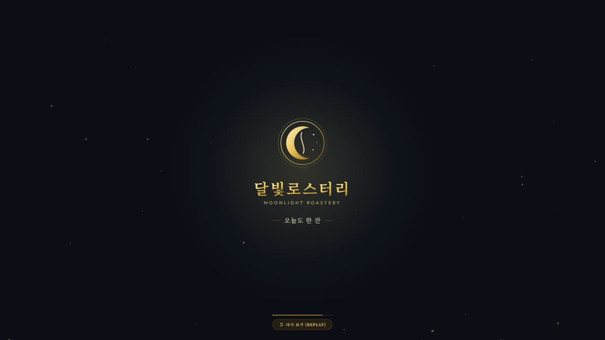
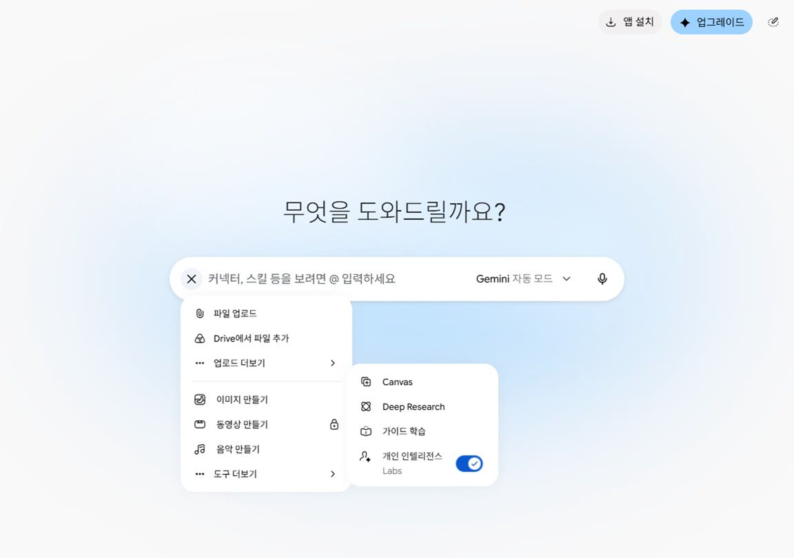
| 클로드 무료 | 제미나이 무료 | |
|---|---|---|
| 로고 (같은 문장) | 40초 · 글자 크고 단정 | 32초 · 화려, 글자 작음 · 설명은 영어로 나옴 |
| 쇼츠 인트로 | 50초 · 첫 번에 화면 꽉 | 18초 · 휴대폰 크기 상자로 나와 「꽉 채우게」로 고침 |
| 내려받기 | 아티팩트 창 위 내려받기 버튼 | 코드 칸 위 「코드 다운로드」 |
2026년 11월 6일 저녁 한 번씩 해 본 결과예요. 같은 문장이어도 할 때마다 조금씩 다르게 나와요.
3 · 잘 시키는 문장 틀
「멋진 모션그래픽 만들어줘」만 보내면 제미나이는 아무것도 안 만들고 되물어요
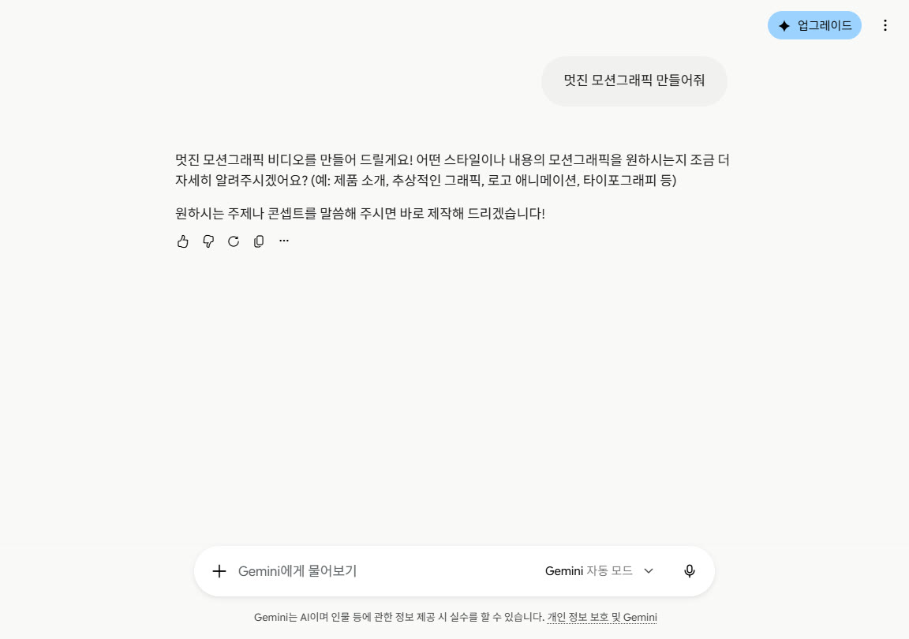
세 칸 + 두 마디
- 무엇을 — 가게 로고, 매출 그래프, 회의 시작 화면…
- 몇 초 동안 — 6초, 15초 반복…
- 어떻게 — 그려지게, 한 글자씩 떠오르게, 쾅 하고, 흔들리게
- + HTML 파일 하나로 (바로 재생되는 결과) · 창 전체를 꽉 채우게 (녹화할 때 작게 안 나오게)
(무엇)이 (몇 초) 동안 (어떻게) 움직이는 모션그래픽을 HTML 파일 하나로 만들어 줘. 창 전체를 꽉 채우게. (가로 / 세로 9:16)
멋진 모션그래픽 만들어줘
오늘 회의 안건 세 개가 하나씩 떠오르는 10초짜리 시작 화면을 HTML 파일 하나로 만들어 줘. 창 전체를 꽉 채우게. 가로 화면.
바꿔 쓰기 예시는 틀을 보여 주려는 응용이고, 영상에서 직접 만들어 보지는 않았어요.
4 · 보고서용 매출 그래프 + 말로 고치기
무료 · 클로드 약 1분 · 고치기 44초
월별 매출이 1월 320만 원에서 6월 870만 원까지 오르는 막대그래프 모션그래픽을 HTML 하나로 만들어줘. 막대가 하나씩 자라면서 숫자가 0부터 올라가고, 마지막에 '6개월 만에 +172%'가 크게 나오게. 8초, 흰 배경, 회사 보고서 느낌으로.
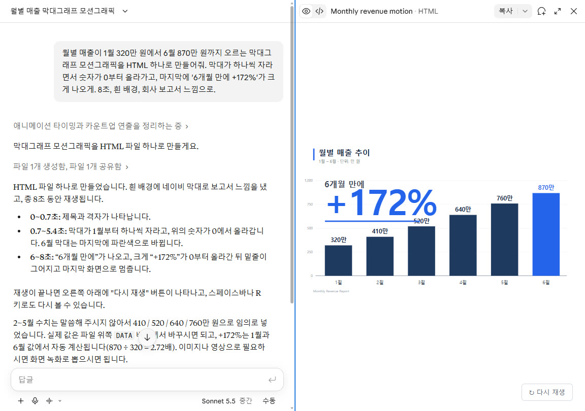
+172% 글자가 막대랑 겹쳐 보여. 그래프 위쪽 빈 곳으로 옮겨 줘. 그리고 막대 색은 초록색으로, 전체 속도는 지금보다 조금 천천히.
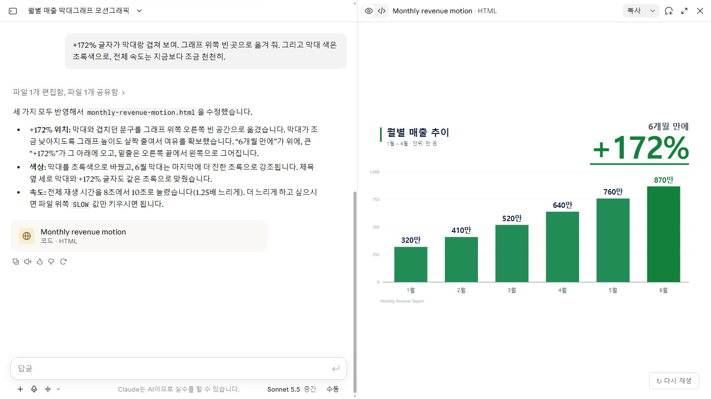
고칠 때 자주 쓰는 말 다섯
- 더 크게 · 더 천천히 · 이 색으로 · 이 자리로 옮겨서 · 계속 반복되게
- 시간표를 쓰면 더 정확해요: 「3초에 나오는 글자를 크게, 5초에 나오는 글자는 금색으로」
- 「처음부터 다시 만들어 줘」는 아껴 두세요 — 잘된 부분까지 바뀌어요
5 · 쇼츠 세로 인트로 — 제미나이 vs 클로드
무료 · 세로 9:16 · 3초
유튜브 쇼츠 첫 3초에 쓸 세로 화면(9:16) 인트로를 HTML 하나로 만들어줘. '퇴근 10분 전 꿀팁'이라는 글자가 쾅 하고 커지며 들어오고, 노란 형광펜이 글자 아래를 칠하고, 화면이 살짝 흔들리게. 배경은 검정.
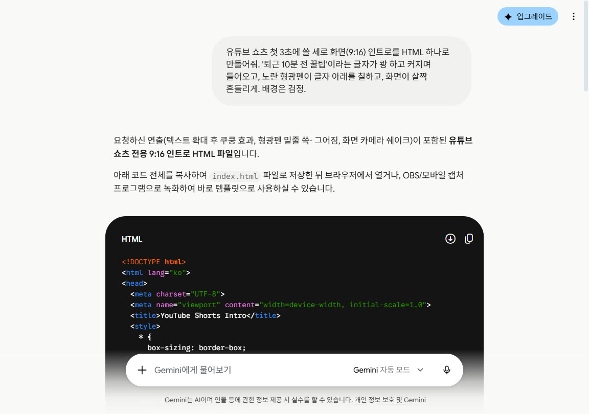
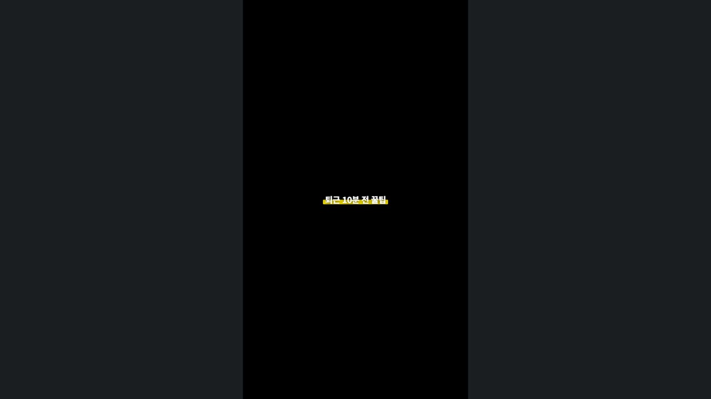
글자가 너무 작아. 화면 폭을 꽉 채울 만큼 크게, 두 줄로 나눠 줘. 윗줄 '퇴근 10분 전', 아랫줄 '꿀팁'. 0.5초에 쾅 들어오고, 1초에 형광펜, 2초에 흔들림.
브라우저 전체 화면으로 열면 가운데 작은 상자로만 보여. 360px 고정 말고, 어떤 화면에서 열어도 창 전체를 꽉 채우게 바꿔 줘. 세로 9:16 비율은 유지하고, 글자 크기도 화면에 맞춰 커지게.
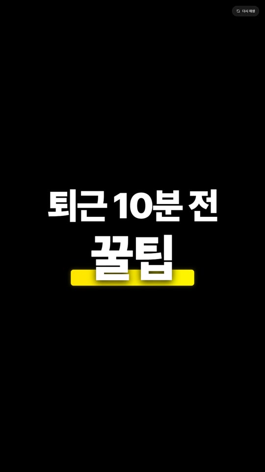
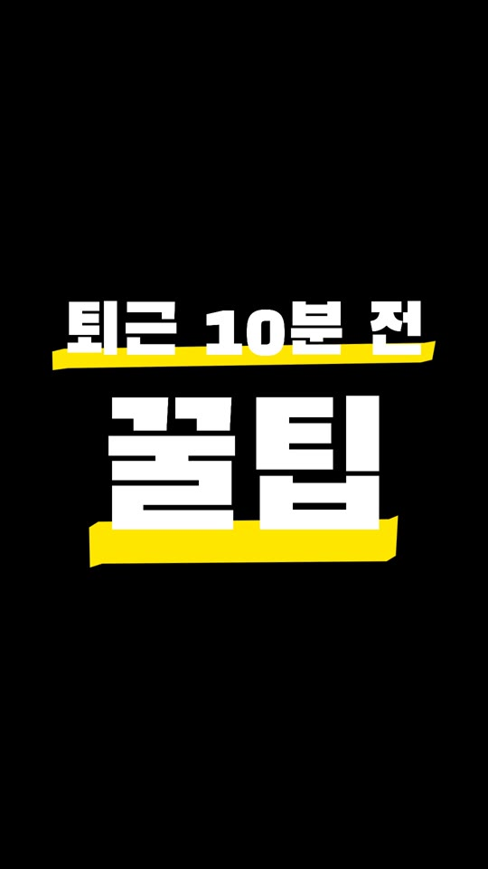
7 · mp4 영상 파일로 저장 · PPT에 넣기
클로드·제미나이 모두 mp4로 바로 뽑는 버튼은 없어요 → 내려받아서 화면 녹화
1. 파일 내려받기
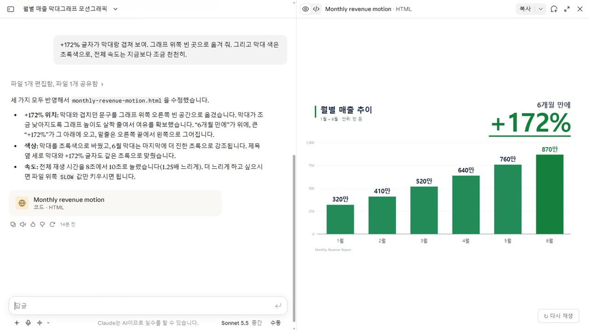
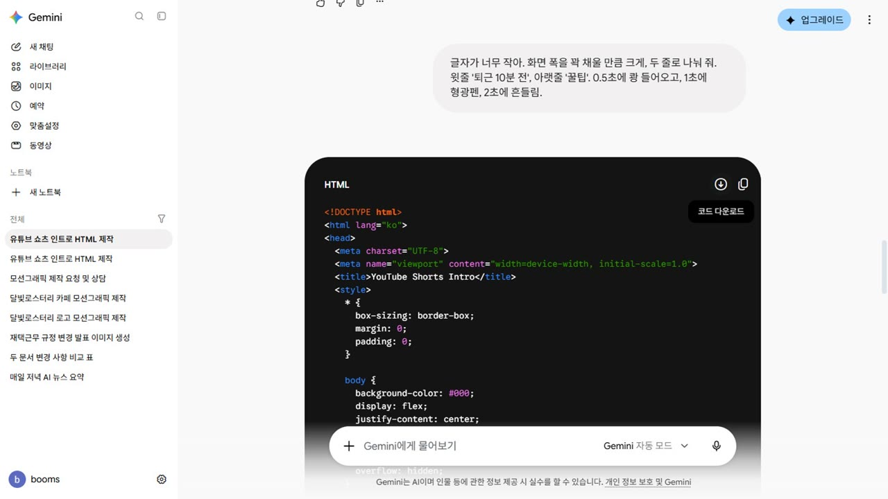
2. 열고 전체 화면
- 내려받은 파일 더블클릭 → 크롬·엣지에서 열림
- 키보드 F11 = 전체 화면 · 화면 클릭 = 처음부터 다시 재생
3. 녹화 (따로 설치할 것 없음)
| 컴퓨터 | 방법 | 알아 둘 것 |
|---|---|---|
| 윈도우 | 윈도우 키 + Alt + R (게임 바 녹화) — 한 번 더 누르면 끝 | 지금 앞에 있는 창을 mp4로 저장 |
| 윈도우 11 | 「캡처 도구」 앱 → 녹화 → 찍을 부분 고르기 | 화면 일부만 찍을 때 |
| 맥 | Shift + Command + 5 → 화면 녹화 | .mov 파일로 저장 |
4. PPT에 넣기
- 파워포인트: 삽입 → 비디오 → 이 디바이스 → 녹화한 mp4
- 또는 녹화 없이 .html 파일을 카톡·메일로 보내도 돼요 — 받는 쪽에서 더블클릭하면 움직여요
자주 묻는 질문
정말 무료예요? 몇 개까지 돼요?
11월 6일 저녁 클로드 무료로 6번, 제미나이 무료로 7번(고치기 포함) 시켰고 한 번도 막히지 않았어요. 둘 다 무료는 사용량 제한이 있고 정확한 숫자는 공개하지 않아요. 클로드는 파일을 만드는 대화가 일반 대화보다 한도를 더 쓴다고 안내해요 — 하나씩 고쳐 가는 게 좋아요.
막히면 어떻게 해요?
같은 문장을 다른 쪽(클로드↔제미나이)에 그대로 붙이면 돼요. 클로드 무료는 남은 사용량을 보는 화면이 없어요(유료 플랜에서만).
사람이 움직이는 영상도 돼요?
안 돼요. 글자·도형·그래프가 움직이는 영상까지예요. 실사·인물은 영상 생성 AI의 몫이에요.
글꼴, 가게 홍보에 써도 돼요?
결과물이 불러오는 구글 무료 글꼴(예: Noto Sans KR·나눔명조)은 공개 라이선스(OFL)라 홍보물에 써도 돼요. 글꼴 파일 자체를 파는 것만 안 돼요. 인터넷이 끊기면 기본 글꼴로 바뀌니 녹화는 인터넷 되는 곳에서.
남의 로고·캐릭터로 만들어도 돼요?
피하세요. 내 가게·내 이름·내 상품으로 만드는 게 깔끔해요.
한국어로 물었는데 영어로 답해요
제미나이가 설명을 영어로 한 적이 있어요(결과물 안 한글은 정상). 「한국어로 설명해 줘」를 붙이면 돼요.
무료 / 유료 (2026년 11월 6일 확인)
| 무료로 되는 것 | 유료 | |
|---|---|---|
| 클로드 | 아티팩트(미리보기)·파일 만들기 · 사용량 제한(숫자 비공개) | Pro 월 $22(부가세 포함, 결제 화면 기준) |
| 제미나이 | Canvas(미리보기·코드) · 사용량 제한(숫자 비공개) | — |
- 클로드 아티팩트 무료 포함: support.claude.com
- 클로드 파일 만들기·한도: support.claude.com · 사용량 안내
- 제미나이 Canvas: gemini.google · 도움말
- 윈도우 게임 바 녹화: support.microsoft.com · 캡처 도구: support.microsoft.com
- 맥 화면 녹화: support.apple.com
- PPT 동영상 넣기: support.microsoft.com
- 글꼴 라이선스: Noto Sans KR OFL · 나눔명조 OFL